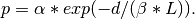

waxman_graph¶
- waxman_graph(n, alpha=0.4, beta=0.1, L=None, domain=(0, 0, 1, 1))[source]¶
Return a Waxman random graph.
The Waxman random graph models place n nodes uniformly at random in a rectangular domain. Two nodes u,v are connected with an edge with probability

This function implements both Waxman models.
- Waxman-1:
 not specified
not specified - The distance
 is the Euclidean distance between the nodes u and v.
is the maximum distance between all nodes in the graph.
is the Euclidean distance between the nodes u and v.
is the maximum distance between all nodes in the graph. - Waxman-2: specified
- The distance is chosen randomly in
![[0,L]](../../_images/math/075f61eea4c937b38e3d94399c58bbd9d7281bce.png) .
.
Parameters : n : int
Number of nodes
alpha: float :
Model parameter
beta: float :
Model parameter
L : float, optional
Maximum distance between nodes. If not specified the actual distance is calculated.
domain : tuple of numbers, optional
Domain size (xmin, ymin, xmax, ymax)
Returns : G: Graph :
References
[R271] B. M. Waxman, Routing of multipoint connections. IEEE J. Select. Areas Commun. 6(9),(1988) 1617-1622. - Waxman-1: